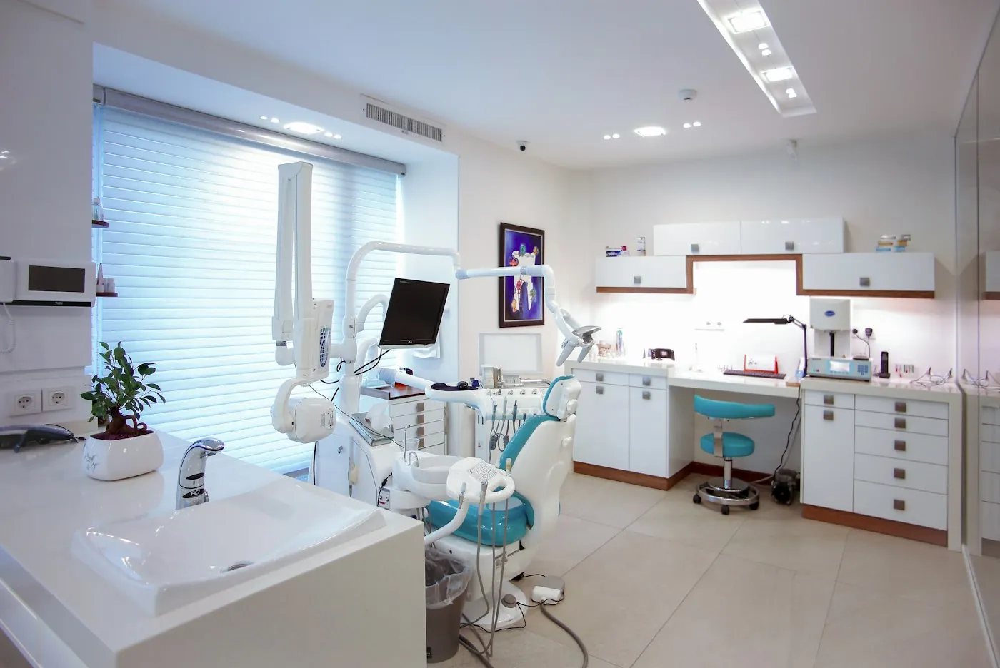
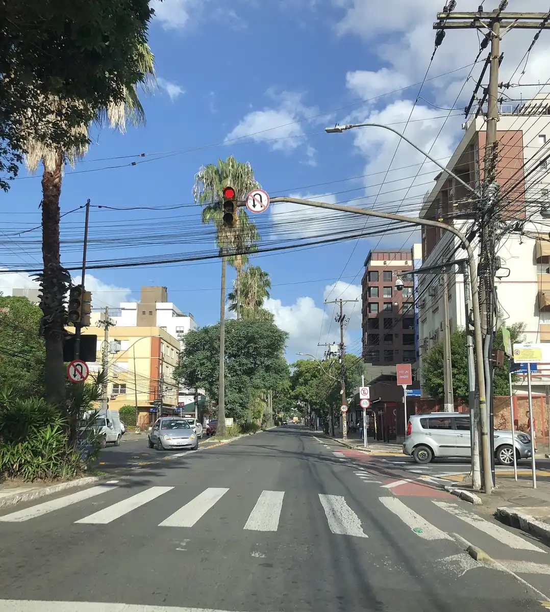

InícioA clínica
A clínica em Porto Alegre desde 2009
Três consultórios na Rua de Exemplo, raio-x digital na própria clínica e uma dentista que acompanha você pessoalmente.
Agendar avaliação
Clínica familiar de bairro desde 2009
Nossa história
Dezessete anos no mesmo endereço
A Lumi abriu em 2009, numa sala da Rua de Exemplo, com um consultório e uma recepção pequena. Os pacientes daquela época trouxeram os filhos, depois os netos, e a clínica cresceu sem mudar de endereço.
Hoje são três consultórios, uma sala de raio-x digital e uma central de esterilização própria. A direção é da Dra. Beatriz Lemos, especialista em implantodontia e reabilitação oral, que trabalha ao lado de mais dois dentistas.
O jeito de atender continua o mesmo: consulta com hora marcada, explicação na tela e orçamento por escrito antes de começar.
Registro e alvará
Uma clínica com nome na porta
Na entrada da Rua de Exemplo há uma placa com o nome da Dra. Beatriz Lemos, dentista registrada no Conselho Regional de Odontologia do Rio Grande do Sul e responsável técnica pela clínica.
A clínica tem alvará da Vigilância Sanitária de Porto Alegre, renovado todos os anos. Quem atende você é quem tem o nome na porta.

Nossa filosofia
Preservar o que é seu
Inspirada no kintsugi, a arte japonesa de consertar a cerâmica quebrada com um fio de ouro em vez de jogá-la fora, a clínica sempre tenta salvar o dente natural antes de pensar em substituí-lo.
Por isso praticamos odontologia minimamente invasiva: diagnóstico com raio-x digital, explicação de cada opção e orçamento por escrito. Sem pressa e sem surpresa, para você decidir com toda a informação.
Estrutura
O que existe por trás de cada consulta
Panorâmico e periapical digitais, com menos radiação que o filme e a imagem na tela em segundos.
Autoclave classe B, instrumentos em embalagem lacrada e aberta na sua frente, com registro de cada ciclo.
Cadeiras com ajuste para costas e pescoço, sugador silencioso e TV no teto para quem prefere se distrair.
Entrada sem degraus, elevador no prédio e banheiro adaptado. Avise se precisar de ajuda na chegada.
Para lentes, coroas e alinhadores, um escâner substitui boa parte das moldagens com massa.
Fichas, imagens e orçamentos guardados em sistema próprio, com acesso restrito à equipe. Veja a política de privacidade.
Em números
A Lumi hoje
2009
Ano de abertura, no mesmo endereço da Rua de Exemplo.
3
Dentistas, cada um na sua especialidade. Conheça a equipe.
12
Convênios odontológicos aceitos. Procure o seu.
Agende
Venha conhecer a clínica
A primeira consulta é uma avaliação: conversa, exame e raio-x panorâmico. Marque pelo WhatsApp ou pelo telefone.